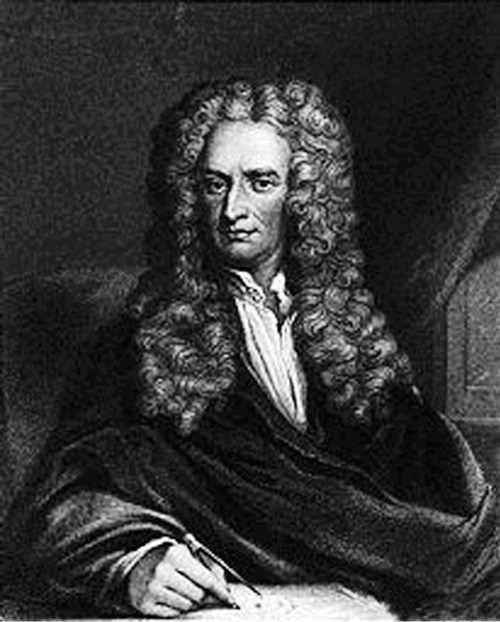

3. Bölüm - GALİLEO GÖRELİLİĞİ
8- Newton’un hareket yasaları nedir? Veba salgını sayesinde bulundukları doğru mudur?
- Eylemsizlik ilkesi, üzerinde herhangi bir etki olmayan nesnelerle ilgili. Zaten yerine geçtiği Aristoteles hükmü de öyleydi. Peki üzerinde etki olan nesneler?
- Tabii ki bu konuyu düşünmek için önce üzerinde etki olmayan nesneleri anlamak gerekiyordu. Bunu eylemsizlik ilkesi sağladı. Sonraki soru ise, “etki”yle tam olarak ne kastedildiğiydi.
Eylemsizlik ilkesi, söz konusu nesnenin vektörel hızının sabit olduğu şeklinde de ifade edilebilir. Bunu değiştirecek etkiye “kuvvet” adını verirsek, eylemsizlik ilkesi, “Kuvvet sıfır ise vektörel hız sabittir” diye de ifade edilebilir. O zaman da sorumuz “Kuvvet sıfır değilse, hız nasıl değişir?” haline gelir.
Bu durumda kuvvetin özelliklerini ve hız değişimi kavramını anlamak gerekir. Örneğin belli bir kuvvet, belli bir yayın, belli miktarda gerilmesiyle elde edilebilir. Çeşitli deneylerle kuvvetlerin vektörel olarak toplanabileceğini bulabiliriz. Örneğin, birbiriyle 60° açı yapan iki eşit kuvvet, ikisinin tam ortası yönünde ve her birinin - misli bir kuvvete; birbirine dik 3 ve 4 birimlik iki kuvvet, 4 birimliğe 37° açı yapan 5 birimlik bir kuvvete eşdeğerdir.
Şekil 9. İki kuvvet, her zaman tek bir başka kuvvete eşdeğerdir.
Şekil 11. Biri itilen ve diğerini iten iki cisim. Newton’un üçüncü yasasını anlamak için.
Gelelim hız değişimine... Bunu nicel olarak nasıl ifade etmeli ki, kuvvet ile bu değişimi birbirine bağlayan bir yasayı ifade edebilelim? Ama bir dakika... Hız nedir ki zaten?
- Hız işte...
- Öyle, değil mi? Günlük hayatımızda bize o derece doğal geliyor ki, ne olduğunu düşünmüyoruz bile... Evet, nedir hız? Ne durumda, bir nesnenin hızı vardır deriz?
- Bir yerde durmuyorsa...
- Yani nesi değişiyorsa?
- Yeri... yani... konumu galiba...
- Aynen öyle. Ama bu değişimin yönü de olabilir. Yerinden güneye de gidebilirsin, batıya da, yukarı da. Yani hızı bir ok ile gösterebilirsin, okun uzunluğu bize hızın büyüklüğünü, okun yönü de bize hızın yönünü söyler.
- Yani hız, matematiksel olarak bir vektör.
- Doğru. O yüzden, hızın yalnızca büyüklüğünü değil, yönünü de birlikte kastettiğimizi kendimize ve karşımızdakine hatırlatmak için vektörel hız terimini kullanırız.7 Hız nedir sorusuna dönersek... Hızı olan nesnenin konumu değişiyordu, değil mi? Peki bu değişim çabuklaşırsa, hız büyür mü, küçülür mü?
7) İngilizce ders kitaplarında hız vektörü için velocity, salt büyüklüğü için speed terimleri kullanılır, ancak bu kelimeler günlük hayatta eşanlamlı olarak kullanılmaktadır. Bizde de benzer şekilde hız ve sürat kelimelerini kullananlar vardır. Ancak, bu uygulama, üniversitelerin ilk sınıflarından öteye pek geçememiştir.
- Büyür tabii...
- Dolayısıyla hız dediğimiz şey, konumun değişme hızıdır...
- Hız, hızdır... Biraz döngüsel olmadı mı?
- Maalesef kelimeler öyle denk geliyor, ama problem yok. Zamanla değişebilecek herhangi bir fiziksel büyüklük için, zamanla değişme hızı8 tanımlanabilir. Bu büyüklük konum olunca, elde edilen büyüklüğe de hız diyoruz; ama başka bir şey diyebiliriz, örneğin sürat. Yani hızın bir dar, bir de geniş anlamı var...
8) Lise son ve üstü öğrenciler için: Zamana göre türev.
Hız değişiminin ihtiyacımız olan nicel ölçüsü de bu şekilde tanımlanır; yani (vektörel) hızın değişme hızı. Buna ivme diyoruz. Yani hızı çabuk değişen bir nesnenin ivmesi yüksektir.
- Örneğin spor arabaların ivmeleri, sıradan arabalara göre yüksektir, değil mi?
- Tabii. Otomobil literatüründe ivme sıfır hızdan 100 km/saat hıza çıkış süresi verilerek dolaylı olarak ifade edilir. Doğal olarak, bu süre ne kadar kısaysa, ivme de o kadar yüksektir. Sıradan otomobiller için bu süre 2010 yılı için 12 s civarındadır, spor otomobiller için 9-10 s ve altı, üst düzey Porsche’ler ya da Ferrari’ler gibi süper spor otomobiller içinse 4 s civarındadır.9 Ancak, ivme her zaman hızlanma anlamına gelmez.
9) İvme kavramını görmüş öğrenciler için: Bu rakamların sırasıyla 2,3, 2,9 ve 6,9 m/s2 ortalama ivmeye karşılık geldiğini hesaplayabilirsiniz.
- Nasıl yani?
Çünkü ivme derken vektörel hızın değişme hızını kastediyoruz. Şekil 10’a bak.
Bu şekil, düzgün dairesel hareket yapan bir cismin yörüngesini ve yörüngenin iki noktasındaki vektörel hızını gösteriyor. Bu iki vektörel hız aynı değil, yani bu iki nokta arasında vektörel hız değişmiş. Dolayısıyla hızının büyüklüğü aynı kalmasına rağmen, cismin ivmesi var. İki noktayı birbirine yakın alırsak, bu ivmenin merkeze doğru olduğunu gösterebiliriz.
Eylemsizlik ilkesinin ötesine geçebilmek için, kuvvet ile hız değişiminin arasındaki ilişkiyi araştırıyorduk. Newton, akıl yürütmeler ve yaptığı deneylerle bu ilişkinin, olabilecek en basit ilişki olduğunu buldu: Kuvvet, ivmeyle orantılı. Yani,
-
- Neden ikinci? Birinci yasa ne?
- Onu az sonra söyleyeceğim. İkinci yasayı matematiksel olarak - şeklinde ifade ediyoruz, burada m, cismin kütlesini gösteriyor. Yasa son derece doğal; sonuçta bir bowling topunu ivmelendirmek, yani hızını değiştirmek, aynı şeyi bir pinpon topuna yapmaktan daha zordur... Ancak, bir sorunumuz var: Bu yasa hangi nesneler için geçerli?
- Ne gibi? Tüm cisimler için geçerli olmalı, değil mi?
- İki parçadan oluşan bir cisim düşün. Bir yasanın, cismin iki parçası için ayrı ayrı geçerli olması, bütünü için geçerli olmasını gerektirmez her zaman...
- Bir örnek verir misiniz?
- Büyük, nötr ve iletken bir düzleme, küçük ve yüklü bir A küresi yaklaştırılırsa, düzlem küreyi çeker. Aynı şey bir B küresi için de geçerli olsun. A ve B kürelerini bir araya getirirseniz, oluşan cisme etki edecek çekim kuvvetinin, tek tek kürelere etki eden kuvvetlerin toplamı olacağı garanti değildir, hatta çekilmeyebilir bile.

Şekil 12.
Isaac Newton
(1643-1727), gerçek fiziğin kurucusu. Veba salgını yüzünden köyünde geçirdiği iki yılın (1665-67) kişinin üretkenliği bakımından benzerini düşünce tarihinde bulmak neredeyse olanaksızdır,
ancak Einstein’ın mucize yılı (“annus mirabilis”) olarak nitelendirilen 1905 yılı bununla karşılaştırılabilir.
- Kürelerin biri pozitif, biri negatif yüklüyse bu olur, değil mi?
- Doğru. Yüklerin büyüklükleri eşit olursa da, birbirini nötralize edeceğinden, küreler düzleme çekilmez. -’-
ya dönersek, örneğin bir otomobilin tekerlekleri, koltukları vs. için bunun geçerli olması, otomatik olarak otomobilin bütünü için de geçerli olması anlamına gelmez, ama ben de otomobilin bütününe uygulayabilmek istiyorum; nereye kadar böleceğim ki zaten? Tekerlekler de jant ve lastikten oluşuyor. Jantın bijonları, lastiğin içinde çelik teller var. Atomlara kadar mı ineceğim? Anlamı yok, o kadar denklemin içinden çıkılmaz...
- Peki ne yapacağız?
- Bir yasaya daha gerek var... Şekil 11’deki gibi, bir kuvvet tarafından itilen iki cismi düşün.
Burada F, yalnızca birinci cisme etki ediyor; ikinciyi ivmelendiren bir kuvvet olması gerek. Buna F2 diyelim. Birinci cisim ise, F’nin yalnızca ona etki etmesinden daha yavaş ivmelenecektir, dolayısıyla F’ye zıt bir kuvvet olmalıdır. Buna da F1 diyelim. Kolayca gösterilebilir ki10 bu cisimlere -’yı istersem teker teker, istersem birlikte uygulayabilmemin şartı F1=F2’dir, yani birincinin ikinciye uyguladığı kuvvetin tam zıddını, ikinci birinciye uygulamalıdır. Üçüncü yasa, bunun tüm cisimler için geçerli olduğunu söyler:
10) -’yı iki cismi tek olarak kabul edip uygularsam, - elde ederim; -’yı iki cisme teker teker uygularsam elde edeceğim denklemler - ve -’dır. Son iki denklemden aldığım - ve - çarpımlarını ilk denkleme koyarsam, - bulurum, yani -.
-
Duvara bir yumruk at. Duvara bir kuvvet etki ettirirsin, değil mi? Peki, elin acır mı?
- Acır tabii...
- Demek ki duvar da senin eline bir kuvvet etki ettirdi... İşte üçüncü yasanın bir uygulaması...
- Bu bana bir şey hatırlattı. “Son Kahraman” adlı filmde, bir aksiyon filmi karakteri, sihirli bir kart sayesinde sinema ekranından gerçek dünyaya geçer. Bir noktada otomobile ihtiyacı olur, düz kontak yapıp çalıştırmak için yumruğuyla park halindeki bir otomobilin camını kırar. Ve elinin acımasına çok şaşırır!
- Evet, sinema perdesinde fizik kuralları pek de geçerli değildir... Her neyse, Şekil 11 için kullandığımızdan azıcık daha karmaşık bir matematiksel işlemle üçüncü yasa sayesinde ikinci yasayı, yani -’yı istediğimiz cisimler grubuna (sisteme) uygulayabileceğimiz kolayca gösterilebilir. Yani üçüncü yasa, ikinci yasanın genel uygulanabilirlik (tutarlılık) şartıdır.
Şekil 13. Isaac Newton evrensel çekim yasasını buluyor. Ay ve elma!
- Hâlâ birinciyi açıklamadınız...
- Birinci yasa da eylemsizlik ilkesi—
- İyi de, o zaten ikinci yasanın bir özel hali değil mi? Hem zaten onu Galileo bulmadı mı?
- Evet, çok titiz olmak istersek, ikinci yasa varken birinciye gerek yok; ikinci onu, ivme=0 hali olarak kapsıyor. Herhalde Aristoteles fiziğinden farkı vurgulamak için böyle adlandırdılar.
- Galileo’ya haksızlık değil mi?
- Bu yasalar, birlikte bir sistem oluştururlar. Her türlü hareket (örneğin çok çeşitli makinelerin işleyişleri), hatta hareketsizlik (örneğin binaların statik hesapları vs.), temelde bu iki yasa ile anlaşılabilir. Birazdan bahsedeceğimiz genelçekim yasası ile beraber kullanılınca, tüm gezegenlerin, uyduların, uzay araçlarının, hatta yıldızların ve gökadaların (galaksilerin) hareketleri anlaşılabilir. Ayrıca daha sonra bu yasalar neredeyse sonsuz sayıda moleküle istatistik olarak uygulanınca, ideal gazların davranışları da anlaşıldı ve buradan da termodinamik bilimi gelişti. Bu bilimin ürünleri de buhar makinesi ile başlar -yani Endüstri Devrimi’nin öncülü Newton yasalarıdır-, içten yanmalı motorlar ve klimalara kadar uzanır.
Bu çok geniş bir kapsam; 20. yüzyıl öncesi fiziğinin yarıdan fazlasını üç satırda özetliyor; günümüzde de -çok özel durumlar hariç- mikrometreden büyük ve ışık hızının yüzde birinden yavaş cisim ya da sistemler için (örneğin, makine mühendisliğinin tamamı) geçerli. Bu yüzden korkunç önemli ve bu yüzden kapsayıcı bir isme ihtiyaç var, o da Newton olmuş. Sonuçta bir futbol maçındaki golde de üç-dört oyuncunun katkısı olabilir, ama gol son vuruşu yapanın hanesine yazılıyor...11
11) Ancak Newton “Uzakları görebildiysem, devlerin omzunda durmam sayesindedir” de demiştir.
- Newton’un keşiflerini veba salgını sayesinde yaptığını duymuştum; bu doğru mu?
- Newton, Cambridge’de genç bir öğrenciyken büyük bir veba salgını başladı. O zamanlar vebanın nasıl bulaştığı bilinmediğinden, alınan tedbir, insanları mümkün olduğu kadar birbirinden uzaklaştırmaktı. Bu yüzden Londra’da okullar da tatil edildi; iki yıl kadar...
- Bizim de İstanbul’a iki santim kar yağınca tatil yaptığımızı düşününce...
- Ve Newton köyüne, Woolsthorpe’a döndü. Ancak ailesi yerel ölçeğe göre zengin olduğu için köy işlerinde çalışması gerekmiyordu; bu süre boyunca düşünecek bol bol zamanı oldu. İşte adıyla anılan hareket yasalarını, birazdan konuşacağımız genelçekim yasasını, hatta bunları birleştirip gezegenlere uygulamak için gerekli matematiği bu sırada geliştirdi. İnsanlık düşünce tarihinde bir kişinin bu kadar üretken olduğu bir başka zaman dilimi bulmak neredeyse olanaksızdır, ancak Einstein’ın mucize yılı (“annus mirabilis”) olarak nitelendirilen 1905 yılı bununla karşılaştırılabilir...
- Ne diyeyim, saygıyla eğiliyorum...
- Az önceki sorunla ilgili olarak, Newton yasalarının veba salgını sayesinde bulunup bulunmadıkları bilinemez, ama veba salgını sırasında bulundukları doğrudur.
9- Newton’un genelçekim yasası nedir? Felsefi/kültürel önemi nedir?
- Genelçekim konuşacaktık...
- Yerçekimi konusunda Aristoteles’in düşüncelerini hatırlıyorsun, değil mi? Galileo, bu konuyu da sorguladı—
- Bu Galileo da Aristoteles’e takmış galiba...
- Ve yaptığı çeşitli deneyler sonucunda hava direnci ihmal edilebildiğinde tüm cisimlerin aynı şekilde düştüklerini buldu. Bu arada, Aristoteles öğretisinin 5. Soru’nun sonlarına doğru bahsettiğimiz çelişkisi de söz konusu tabii. Yaşadığı Pisa’nın eğri kulesinden cisimleri düşmeye bırakıp incelediği rivayet edilir, ama bu çok olası görünmüyor.
- Neden?
- Serbest düşme epey hızlı olabilir. O zamanda bu süreleri ölçebilecek hassaslıkta saatler yoktu. Galileo, eğik düzlemdeki hareketin, serbest düşmenin yavaşlamış hali olduğunu kavrayıp, konuyu bu yöntemle inceledi ve serbest düşmenin yalnızca tüm cisimler için aynı olmayıp, ivmesinin de sabit olduğunu buldu.
- Bizim g diye bildiğimiz şey, değil mi?
- Evet, öyle. Newton, hareket yasalarını geliştirdikten sonra, Ay ile Dünya arasında bir kuvvet olması gerektiğini anladı. Çünkü, Şekil 10 ile ilgili olarak bahsettiğimiz gibi, dairesel harekette merkeze yönelik bir ivme söz konusudur ve Newton’un ikinci yasasına göre, bir ivme ancak bir kuvvet tarafından oluşturulur. Bir elma ağacının altında oturmuş, bu kuvvet üzerine düşünürken, düşen bir elmayı fark etti. (Elmanın tam olarak nereye düştüğü konusunda rivayet muhtelif! -) Elma da dünyaya doğru ivmeleniyordu, Ay da!
- Acaba ikisini de ivmelendiren aynı kuvvet olabilir miydi?
- Düzgün dairesel hareket yapan herhangi bir cismin ivmesi, duymuş olabileceğin v2/r formülüyle kolayca hesaplanabilir. Ay için bu ivme, yaklaşık olarak g’nin 3600’de biri kadar çıkar. Newton, Ay yörüngesinin yarıçapının Dünya’nın yarıçapının yaklaşık 60 katı olduğunu da biliyordu. Eğer iki ivme de aynı kuvvet tarafından oluşturuluyorsa, mesafe artınca ivme, artma çarpanının karesi kadar bir bölen ile azalıyor görünüyordu. Ayrıca düşme ivmesi kütleden bağımsız olduğuna göre, düşen cisme etki eden çekim kuvveti, çekilen cismin kütlesi ile çarpılmış bir ifade olmalıydı. (İkinci yasaya göre -, ama a kütleden bağımsız, örneğin dünya yüzünde g sabiti.) Üçüncü yasaya göre ise, düşen cisim de dünyayı çekmektedir, yani dünya da çekilen cisim olarak kabul edilebilir, öyleyse genelçekim kuvveti ifadesi dünyanın kütlesini de çarpan olarak içermelidir. Bu akıl yürütmelerle Newton, şu yasaya ulaştı:
-
- Ama yalnızca bir karşılaştırmayla yasa olmaz ki! 60’dan 3600 elde etmenin en basit yolu karesini almak, ama bin türlü başka yolu da bulunabilir. Örneğin, 60 ile çarpmak, 3540 ile toplamak, 10 ile çarpıp 3000 ile toplamak...
- Tamamen haklısın. Gerçi Occam’ın Usturası ilkesi12 bize en basit yolun doğru olma olasılığının yüksek olduğunu söyler, ama Newton yukarıda söylediğimiz yasayı hemen geçerli kabul etmedi. Kendisine şu soruyu sordu: Eğer Güneş’in kütlesi, bir gezegeninkinden çok büyükse, böyle bir kuvvetin etkisi altında bir gezegenin hareketinin mümkün olan en genel hali nedir?
1212) Ustura kelimesinin kullanılması, bu ilke ile gereksiz varsayımların traşlanmasını belirtiyor.
- İyi de, yasa “noktasal cisimler” diyor. Güneş de, gezegenler de noktasal değiller.
- İkisi de aralarındaki mesafeye göre küçük iseler, noktasal oldukları yaklaşımı, kötü sonuç vermez. Ama aslında buna da gerek yok. Bu yasanın şöyle bir güzel tarafı var: Küresel simetrisi olan, yani merkezi sabit kalmak şartıyla herhangi bir şekilde döndürüldüğünde kütle dağılımı değişmeyen bir cismin çekimsel etkisi, sanki tüm kütlesi merkezine toplanmış gibi çıkıyor. Dolayısıyla Newton, Güneş ve gezegen noktasalmış gibi düşünebilirdi.
Bu soruyu matematiksel olarak ifade edersen, bir diferansiyel denklem bulursun. Ama Newton’un zamanında diferansiyel denklem kavramı yoktu, kimse böyle bir şey bilmiyordu.
- Ben de bilmiyorum, nedir diferansiyel denklem?
- Bilinmeyenin yalnız kendisini değil, türevini ya da türevlerini de içeren denklem.
- Bir dakika, düşüneyim.... Gezegenin hareketini bulmak istediğimize göre, bilinmeyenimiz... konum. Hız, konumun türevi, ivme hızın türevi... O da ikinci yasa gereği kuvvet ile ilişkilendirileceğine göre... bu tür bir denklem çıkması normal.
- Doğru. Doğru da, Newton’un zamanında türev kavramı da yoktu.
- Peki, ne yaptı?
- İcat etti. Yalnızca soruyu matematiksel olarak ifade edebilmek için bile, türev kavramını icat etmesi gerekti. Çözebilmek için de türevin ters işlemi olan integrali icat etti.13 Ve çözdü.
13)Newton ile paralel olarak türev, integral ve bazı ilgili kavramları Leibniz de keşfetti. Hatta uzun süre, kimin keşfi daha önce yaptığı konusunda tartışmalarla geçti. Newton, türev ve integrali fiziksel problemleri çözmek için kullandı, ama bunları daha eski moda geometrik bir dilde bunları ifade etti. Leibniz’in kullandığı matematik dili ise, günümüzdekine daha yakındır.
- Yüksek matematik derslerinde okunan diferansiyel ve integral hesabı da Newton icat etti demek... Boşuna az evvel saygıyla eğilmemişim... Peki tam olarak ne buldu?
Üç tür yörüngenin mümkün olduğunu buldu: Elips, parabol ve hiperbol şeklinde yörüngeler. (Şekil 14)
Şekil 14. Elips ve odakları, parabol ve hiperbol.
Gezegenlerin yörüngelerinin elips şeklinde olduğu, daha önce Tycho Brahe’nin 20 yılda topladığı verileri yine bir 20 yıllık zahmetli hesaplarla analiz eden Kepler tarafından bulunmuştu. Tycho’nun gözlemevi, teleskopsuz yapılabilecek en hassas gözlemleri yapabilecek özelliklerdeydi14 ve bu hassaslık Kepler’in Batlamyus ve orijinal Kopernik modellerini yanlışlaması için yeterli oldu. Bu arada bu yörüngelerde Güneş, merkezde değil, elipsin odaklarından birindedir.
14)Tycho ile eşzamanlı olarak İstanbul’da da Takiyüddin adlı bir astronom, çok benzer özelliklerde bir gözlemevi kurmuş, ancak iç politik çekişmeler ve boş inançlar yüzünden, kısa bir çalışma döneminden sonra gözlemevi tahrip edilmiştir. Tycho’ya dek en mükemmel ölçümler ise ondan 200 yıl kadar önce Semerkant’ta Uluğ Bey tarafından yapılmıştı.
Kepler yasaları, bir bakıma büyük bir devrimdir: İlk kez gökcisimlerinin hareketleri “mükemmel” daire(ler) cinsinden değil de, başka bir geometrik şekille betimleniyordu. Öte taraftan, tam anlamıyla yasa da sayılmazlar, çünkü yalnızca betimlerler; bir anlamda toplanmış verilerin özetidir. Tabii ki çok iyi bir özettirler; bir gezegen için Batlamyus’un 10, Kopernik’in sekiz parametresini, dört parametreye indirir; karmaşık, fiyonklu yörüngeyi basit, düzgün elipse indirger. Ancak, “Neden böyle hareket ediyor?” sorusunu cevaplamazlar. Newton’un çözümleri ise, açıklayıcıdır; çünkü bu yörüngeler, “Kuvvet buysa, hareket nasıldır?” sorusunun cevabı olarak bulunmuştur. Bunların, Kepler’in formülasyonuyla çakışması, Newton’un hem hareket yasalarının, hem de genelçekim yasasının sağlaması olmuş, ancak bu sonuç ile bu kuramlar genel kabul görmüştür. Ayrıca, çözümde, daha önce düşünülmemiş olan parabolik ve hiperbolik yörüngeler de çıkmaktadır. Bu yörüngeler, sonsuzdan gelip, Güneş’in yakınından sadece bir kez geçerek tekrar sonsuza giden gökcisimlerine (bazı kuyrukluyıldızlar gibi) karşılık geldiklerinden, eskilerin bunları incelemiş olmaları beklenemezdi.
Ancak, Newton’un gezegen hareketlerini açıklaması da büyük bir devrimdir: Gezegenler, düşen elma ya da havada uçan top mermisi ile aynı yasalara uymakta, aynı kuvvetlere maruz kalmaktadırlar. Yersel (fani)-göksel ayrımı kalkmıştır. Artık bilimsel olarak kozmoloji (evrenbilim) yapabiliriz, çünkü evrenin başka yerlerinde kurallar farklı değildir—
- Bu yüzden “evrensel çekim yasası” deniyor herhalde...
- Bir başka deyişle, yalnızca bizim konumumuz özel olmamakla kalmıyor; evrende hiçbir özel konum yok. Newton’un yerdeki ve gökteki cisimlerin çekimden etkilenmelerini aynı yasaya bağlaması ile başlayan (ve şimdiye kadar yanlışlandığına şahit olmadığımız) bu kabul sayesinde, burada, yani dünyada yapacağımız çalışmalarla bütün evreni anlamayı ümit edebiliyoruz.
10- Galileo göreliliğinde dönüşüm nasıl yapılır?
- Yani gözlemcinin yalnızca hızı değil, konumu da fark etmiyor.
- Evet. Hız konusuna dönersek, madem mekaniğin yasaları Newton yasaları ve bunların matematiksel ifadeleri var; bu yasaların, eşdeğer olduğuna karar verdiğimiz tüm gözlemciler için aynı olduğunun matematiksel gösterimi de olması gerekir. Çoban ile makinisti hatırlıyor musun? Hani çoban makinistin verilerini, kendi ölçseydi bulacağı verilere dönüştürmüştü. Yasalar ise bu verilerin kendi içinde sağladığı bazı ilişkiler olduğuna göre, iki gözlemciye göre yasanın aynı olması, dönüşümün matematiksel doğasında olan bir şey olmalı. Yani, dönüşümün yasaya da etki edip, yasayı değiştirmediği gösterilebilmeli.
- Nasıl bir şey bu dönüşüm?
- Einstein öncesinde göreliliği gerçekleyen dönüşüm kümesine Galileo dönüşümleri deniyor. Anlamak için, hareket verilerinin, mümkün olduğu kadar çok an için konumun15 ölçülmesi olduğunu (Tablo 1 gibi) hatırlayalım ve çoban ile makinist örneği çerçevesinde düşünelim. Konumu, gözlemcinin merkez kabul ettiği yerden gözlenen cisme uzanan bir ok ile temsil edebiliriz. Gözlemci, bu noktadan çıkan birbirine dik üç eksen kullanırsa, bu okun eksenlere izdüşümleri de x, y, z verileri olur. Bu eksenlere koordinat sistemi, x, y, z değerlerine ise cismin koordinatları denir.16 Bu arada, dik eksenlerden oluşan koordinat sistemine, kartezyen17 denir. Sonuç olarak dönüşüm, bir gözlemcinin verilerinden diğerini üretecek bir dizi formülden oluşur.
15)Lise ve üstü öğrencileri için tekrar hatırlatıyorum; x(t), y(t), z(t) fonksiyonlarının.
- Zor mu bu formüller?
- Hayır canım, yalnızca ilkokuldan beri bildiğin dört işlemi içeriyor. Anlamını görsel olarak anlatmak için, çoban ve makinist meselinin şeklini, koordinat sistemlerini ve konumu belirten okları gösteren, ama arka planı göstermeyen bir şekilde tekrar çizelim:

Şekil 15. Çobanın koordinat sistemi, makinistin koordinat sistemi ve karga. Yani Şekil 1’in soyutlaştırılmış hali.
Trenin hızına u der, x eksenlerini trenin hareket yönüne çevirir, kronometremizi koordinat sistemi merkezleri çakıştığı anda başlatır ve çobanın ölçtüğü büyüklükleri C, trenden ölçülen büyüklükleri T üst-indisiyle gösterirsek, dönüşüm şu şekillerde yapılır:
-
Biraz dikkatli olarak durumu incelersek, buradaki ana fikrin, çobanın ölçtüğü makinist-karga okunun (vektörünün), makinistin ölçtüğü makinist-karga oku (vektörü) ile aynı kabul edilmesi olduğunu görebiliriz.
- Aynı değil mi?
- Bu hiç açık değil... Nitekim, Einstein özel göreliliğinde aynı olmayacak. Ancak, 4. Soru’da yasalar için bahsettiğimiz gibi, bu dönüşümler de günlük hayatımızda gördüğümüz hızlar için pratikte doğru.
- Nasıl pratikte?
- Yani özel görelilikteki daha sonra göreceğimiz dönüşümden milyarda, trilyonda bir veya daha az farkı oluyor.
Şimdi dönüşümün yasaya etkisini konuşalım... Madem yasamız ivme ile kuvvetin orantılı olduğudur; dönüşümün ivmeyi nasıl etkilediğini bulmamız gerekiyor. 8. Soru’da konuştuğumuz gibi, ivme, “hızın değişme hızı”dır. Öyleyse hız ile başlayalım. O da “konumun değişme hızı”... Üstteki dönüşümleri biraz incelersek,18 alt-indislerle bileşenleri göstererek, hız için şunları buluruz:
18)Üniversite öğrencileri için: vx’in x’in zamana göre türevi (diğer boyutlar için de aynı şey) olduğunu hatırlayıp dönüşümün zamana göre türevini alırsak, hızların dönüşümünü buluruz.
-
Bu arada v ile gösterdiğim bu hızların gözlemcilerin herhangi birine değil, gözlenen cisme ait olduğunu tekrar hatırlatayım; örneğin cevize veya kargaya. Etkiyi biraz daha iyi anlamak için ise, hızın tamamen raylara paralel olduğu durumu düşünelim. O zaman vy ve vz sıfır olur ve ters dönüşüm olarak vC = vT + u buluruz. Yani 10 m/s hızla giden trenden makinist 15 m/s hızla öne doğru bir top fırlatsa, çoban bu topun hızını 25 m/s olarak ölçer.
- Bu bana çok doğal geliyor...
- Evet, günlük hayatımızdaki deneyimlerimizle çok tutarlı, değil mi? Biz ivmeye doğru devam edelim. Trenin hızı u sabit olduğu için, hemen yukarıdaki hız dönüşümü ifadelerindeki “hızların değişme hızı”nı etkilemez; dolayısıyla19 ivme için,
19)Üniversite öğrencileri için: ax’in vx’in zamana göre türevi olduğunu vd. hatırlayıp hız dönüşümünün zamana göre türevini alırsak, ivmelerin dönüşümünü buluruz.
-
buluruz. Yani bir karga için, çobanın ve makinistin gözledikleri ivme eşittir—
- Gözledikleri kuvvet de eşit olduğuna göre, biri için Newton’un ikinci yasası geçerliyse, öbürü için de geçerli! Anladım, değil mi?
- Evet, Galileo göreliliğini anladın. İşte, yasanın bu değişmezliği sayesinde dünya üzerinde geliştirdiğimiz bilim ve onun üzerine kurduğumuz teknoloji, Dünya’nın Güneş etrafındaki saniyede 30 km’lik hızından, Güneş’in gökada merkezi etrafındaki hızından vs. etkilenmiyor.
Ancak, özel görelilikte -düşük hızlarda Galileo dönüşümüne yaklaşsa da- farklı bir dönüşüm kullanacağımız için, söylediğin iki gözlemcinin gözledikleri kuvvetin eşit olmasını, söylemeye gerek bile duymadığın iki gözlemcinin kütleyi eşit almaları konularını, hatta kütlenin tanımını daha dikkatli bir şekilde tekrar düşünmemiz gerekecek. Aslında dönüşümlerin kendisinde de yazılmaya gerek bile duyulmayan, ancak özel görelilikte değişecek bir öğe var, zamanı gelince konuşacağız.
Bu arada, Şekil 15’e tekrar bakarsan, şekilde çobanın, trenin, makinistin olmadığını, yalnızca iki koordinat sisteminin olduğunu göreceksin. Zaten dönüşüm formülleri de, yalnızca cisimlerin koordinatlarını içeriyor; yani aslolan koordinat sistemleri, burada tren ve çobanın ayağının bastığı toprak, yalnızca koordinat sistemlerinin taşıyıcıları. Bu yüzden, genellikle biz “gözlemci” ibaresini “koordinat sistemi” ibaresi ile denk olarak, ya da onun daha kısa bir ifadesi olarak kullanırız, illa bir kişiyi, bir insanı kastetmeyiz.
Son olarak, bir gözlemcinin diğerine göre hızının (hani dönüşümde u ile gösterdiğimiz) sabit olması gerektiğini tekrar vurgulayayım. Bu hız sabit olmasa, iki gözlemcinin (çoban ve makinist gibi) gözledikleri ivme eşit olmazdı; dolayısıyla biri için Newton yasalarının geçerli olması, diğeri için de geçerli olmasını gerektirmezdi. Yani mekaniğin temel yasalarının geçerli olduğu tüm koordinat sistemleri, birbirlerine göre sabit hızlarla hareket ederler.
11-İvmelenen sistemlerde neden (merkezkaç gibi) sanal kuvvetler algılanır? Bir kuvvetin fiziksel olup olmadığına nasıl karar verebiliriz?
- Mekaniğin temel yasalarının geçerli olmadığı koordinat sistemleri de mi var?
- Tabii. Trende, bir masanın üzerine bir bardak koy. Trenin hızı sabit ise, bardak yerinde durur, yani eylemsizlik ilkesine uyar. Ama hız sabit değilse, örneğin istasyona girmek için tren fren yapıyorsa, bardak trenin önüne doğru hareketlenir. Onu öne doğru iten bir kuvvet olmadığına göre, bu hareketlenme eylemsizlik ilkesini, dolayısıyla mekaniğin temel yasalarını ihlal eder. Bu örneğin gösterdiği gibi, ivmelenen koordinat sistemlerinde (yavaşlamak da bir ivmedir, yalnızca hız ile zıt yönde, bir diğer deyişle negatiftir) mekaniğin temel yasaları tam olarak geçerli değildir.
- Neye göre ivmelenen?
- Mekaniğin temel yasalarının geçerli olduğu koordinat sistemlerine göre.
- Bardağa kuvvet etki etmediği doğru değil ki. Yerçekimi var, sürtünme var... Dolayısıyla zaten eylemsizlik ilkesinin şartları sağlanmıyor...
- Masa üzerindeki bir cisme etki eden yerçekimi kuvveti, masanın uyguladığı “normal kuvvet” ile dengelenir; bu kuvvet olmasaydı, cisim masanın içine batardı—
- Bu kuvvet de nereden çıktı? Bir dergide okuduğum kuvvetler listesinde dört kuvvet vardı, ama böyle bir şey yoktu.
- O liste temel kuvvetlerin listesi, sürtünme de yoktur o listede. Normal kuvvet, birbirine değen iki katı cismin atomlarına ait elektronların birbirlerini itmelerinden kaynaklanır, o sayede dünya bizi aşağıya doğru çektiği halde yerin içine batmıyoruz. Sürtünme ise, harekete engel olmaya çalışır, yani öne giden bardak için arkaya doğru etki eder, öne hareketlenmeyi açıklamaz. Zaten masa üstünün sürtünmesiz olduğu durumu da düşünebilirdik...
- Tamam, çözdüm. Tren yavaşlıyor, ama bardak eylemsizlik ilkesi gereğince yavaşlamıyor, o yüzden trenin önüne doğru gidiyormuş gibi görünüyor.
- Bu, raylara sabitlenmiş bir koordinat sistemine göre doğru. Ama ya benim koordinat sistemim trene sabitlenmişse? Bu sistemde masanın konumu sabit, bardağın konumu değişiyor... Kaçış yok, bu koordinat sisteminde Newton yasaları tam olarak geçerli değil.
İşte mekaniğin temel yasalarının geçerli olduğu koordinat sistemlerine, eylemsiz koordinat sistemleri deniyor. (Bu yasaların ilki eylemsizlik ilkesi olduğu için.) Bu sistemlerin birini bulursanız, hepsini bulmuş olursunuz, çünkü hepsi sizin bulduğunuza göre sabit hızlarla hareket ederler. (Önceki sorunun sonu.)
Ancak sabit hızla hareket ederken, eksenlerinin dönmemesi gerekir, çünkü dönme de bir çeşit ivmedir. (Bkz. Soru 8.) Böyle bir sistemin pratikte nasıl olacağı sorusuna Newton, “sabit yıldızlara göre dönmeyen” diye cevap vermişti. Çünkü yıldızlar o kadar uzaktır ki, bakış yönümüze dik bir hareketleri olsa bile, ona baktığımız açının değişimi bir insan ömrü boyunca gözle fark edilemeyecek kadar küçüktür; dolayısıyla yıldızların yönünün pratikte değişmediğini kabul edebiliriz. (Bu, 5. Soru’da konuştuğumuz “gök kubbe” kavramının oluşmasına yol açmıştı.) Günümüzde de bu tanım kullanılabilmektedir, yönlendirme hassasiyetine ihtiyacı olan bazı uzay araçlarında, yıldız takip edici sistemler kullanılarak, eksenleri belli yıldızlara yönelik tutup, böylece koordinat sistemlerinin dönmemesi, yani roketsiz uçuş sırasında eylemsiz olması sağlanır.
- Dönmekten bahsetmişken... Merkezkaç kuvvetinin fiziksel olmadığını söylemiştiniz 2. Sorunun başlarında.
- Biraz önce bahsettiğimiz yavaşlayan treni düşün. Masanın üzerindeki bardak, ileriye doğru hareketlendiğinde, zihnimiz bu hareketlenmeye bir kuvvet atfeder. Hele tutunamayıp, ileri hareketlenen bizsek, bir kuvvetin bizi öne çektiğini düşünürüz. Ama aslında yalnızca, tren bizden daha çabuk yavaşlamaktadır.
Ya da dönen bir platformda, arkası dışarı bakan bir sandalyede oturduğunu düşün. Sandalyenin arkalığı sırtına bir kuvvet uygular. Sen, sandalyede sabit olduğunu düşündüğün için (yani dönen koordinat sisteminde konumun değişmediği için), sandalye arkalığının uyguladığı kuvvetin bir başka kuvvet tarafından dengelendiğini düşünürsün. Merkezkaç kuvvet, işte budur.20 Halbuki, eylemsiz koordinat sistemine göre, sandalye arkalığının uyguladığı kuvvet tek kuvvettir, merkezkaç kuvveti yoktur.
20)Ayrıca, dönen platformda sandalyede oturmayıp, yürümek istersen, yalnızca merkezkaç kuvveti değil, Coriolis kuvveti denen başka bir kuvveti de hissedersin.
- Ama tek kuvvet varsa ivmelenmem gerekmez mi?
- İvmeleniyorsun zaten! Can alıcı nokta bu. Eylemsiz koordinat sisteminde, sen düzgün dairesel hareket yapıyorsun, bu da merkeze doğru ivme demektir. Şekil 10’u hatırla.
- Hımm... Eylemsiz sistemde sandalyenin arkalığı beni itiyor (bunu hissedebiliyorum), başka kuvvet yok, o yüzden -’ya göre ivmem var, o da merkezcil ivme... Dönen sistemde ise, fiziksel kuvvetten başka bir de sanal merkezkaç kuvvet “var”, bu ikisi birbirini dengeleniyor, dolayısıyla ivmem yok... Öyle mi?
- Öyle. Özetle, mekaniğin temel yasaları, aslında eylemsiz olmayan koordinat sistemlerinde geçerli değiller; geçerliymiş gibi düşünülmeye çalışıldığında bu tür sanal kuvvetler ortaya çıkıyor.
- Peki dönen ortamlardaki sanal kuvvetlerin ismi var da, düzgün ivmelenen sistemlerdekilerin niye yok?
- Uzun süre düzgün ivmelenen sistemlerle pek karşılaşmayız da ondan... Bir tren ya da otomobil, en fazla 20 saniye kadar hızlanır, son hızına ulaşınca artık hızlanamaz. Halbuki bir atlıkarınca saatlerce dönebilir; dünya veya başka bir gezegen ise neredeyse sonsuza kadar. Bu yüzden dönen sistemlerdeki sanal kuvvetlerin etkisini tutarlı olarak görebiliyoruz, dolayısıyla bunlara isim veriyoruz.
- Hissettiğim ya da gördüğüm bir kuvvetin sanal mı, gerçek mi olduğunu bilmemin bir yolu var mı?
- Fiziksel kuvvetler Newton’un üçüncü yasası uyarınca, iki cisim arasında etkindir, yani bir etkilenen varsa, bir de o kuvveti etki ettiren vardır. Bir kuvvet için “Kim ya da ne etki ettiriyor?” sorusunun cevabı varsa, o kuvvet fiziksel, yoksa sanaldır. Örneğin dönen platformda otururken sırtına etki eden kuvveti sandalyenin arkalığı etki ettirmektedir, merkezkaç kuvvetini ise neyin/kimin etki ettirdiği sorusunun cevabı yoktur.
- Bu da bir koordinat sisteminin eylemsiz olup olmadığını anlamanın bir yolu galiba...
- Evet; gördüğümüz kadarıyla bir başka cisimle etkileşimde olmayan cisimler hızlarını değiştirmiyorsa, sistemimiz eylemsizdir. Etkileşim görmediğimiz halde, hızını değiştiren bir cisim varsa, ya henüz fark etmediğimiz bir etkileşim vardır, onu ararız; ya da sistemimiz eylemsiz değildir.